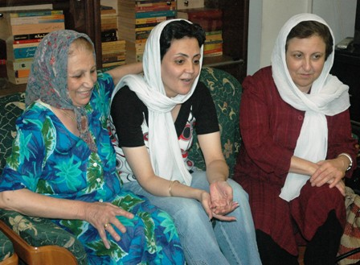
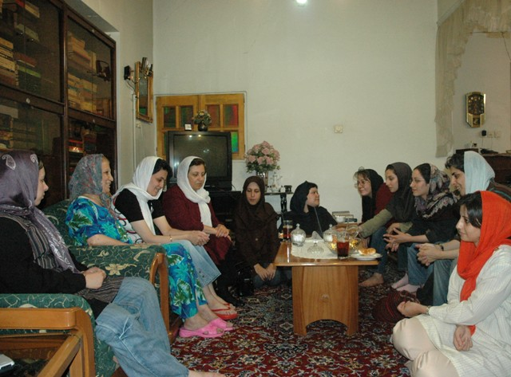

|
|

در آستانه سومین سال کمپین
شیرین عبادی: قوی ترین جنبش در خاورمیانه، جنبش زنان ایران است
دیدارشیرین عبادی با محبوبه کرمی بعد از آزادی او از زندان
چهار شنبه6 شهریور 1387

تغییر برای برابری: در دومین سالگرد کمپین یک میلیون امضا برای تغییر قانون تبعیض آمیز، تعدادی از اعضای کمپین در منزل محبوبه کرمی که روز گذشته و پس از تحمل 70روز زندان، آزاد شده بود، گرد آمدند. شیرین عبادی در این دیدار، جنبش زنان ایران را بزرگترین جنبش خاورمیانه دانست و به مناسبت دومین سالگرد کمپین گفت:« این پیروزی مبارک باشد بر همه مخصوصا بر آنانی که هزینه های بیشتری برای کمپین یک میلیون امضا پرداختند.»
برنده جایزه صلح نوبل ادامه داد:« جنبش زنان رهبر ندارد، شعبه ندارد. جایگاه واقعی جنبش زنان در منازل هر ایرانی معتقد به برابری است. رهبران دستگیر می شوند، کشته می شوند، جنبش هایشان متوقف می شود اما علت این که جنبش زنان متوقف نمی شود این است که جنبش زنان رهبر ندارد و فعالیت آن به تک تک افراد بستگی دارد.»
عبادی گفت:« خوشحالم که بنیانگذاران و فعالان کمپین دختران جوان هستند؛ نسلی که همسن دختران من هستند و همین مساله باعث قوت کمپین شده است. ما از شما جوانان کمپین نیرو می گیریم.»
این حقوقدان و حامی کمپین یک میلیون امضا افزود:« قوی ترین جنبش در خاورمیانه، جنبش زنان ایران است. شما در کدام کشور منطقه می توانید جنبشی به پویایی جنبش زنان ایران مثال بزنید.کویت، بحرین، عربستان، افغانستان، پاکستان، ترکیه، عراق به همین دلیل این پیروزی مبارک باشد بر همه مخصوصا بر آنانی که هزینه های بیشتری برای کمپین یک میلیون امضا پرداختند.»

محبوبه کرمی که شب گذشته با پرداخت وثیقه 100میلیون تومانی از زندان آزاد شده است، با بیان خاطراتی از دوران زندان از جذب 22داوطلب همکاری جدید با کمپین یک میلیون امضا از بین دستگیرشدگان روبروی پارک ملت خبر داد. وی گفت:« تا پیش از این کمپین را فقط از نظر تئوری آموخته بودم و اثر تبعیض های قانونی را بر زندگی خودم حس نکرده بودم ولی در زندان زنانی را می دیدم قربانی قانون تبعیض آمیز. دوران زندان باعث شد کمپین را به صورت عملی هم تجربه کنم.»
وی درباره مخالفت زنان زندانی با لایحه حمایت از خانواده گفت:«تمام زنان زندانی که با آنها آشنا شده بودم، می خواستند که از مخالفت آنان را هم با تصویب این لایحه به دیگران اطلاع دهم. آنان اسم این لایحه را توهین به خانواده گذاشته بودند و خواستار امضای توماری برای مخالفت با لایحه بودند.»
محبوبه کرمی در طول مدت بازداشت، چهار بار مورد بازجویی قرار گرفته بود که بار آخر آن توسط بازجوهای زن صورت گرفته بود. محبوبه کرمی گفت:« آنان سوالاتی از فعالیت من در کمپین یک میلیون امضا و جنبش زنان داشتند. من هم خواسته هایمان را برایشان شرح دادم. ولی بازجوهای زن می گفتند افتخار می کنند که معادل نیمی از یک انسان محسوب می شوند و می گفتند این تبعیض های قانونی را کاملا قبول دارند.»
کرمی گفت:« خوشحالم از این که در سالگرد کمپین یک میلیون امضا در جمع دوستانم هستم.امروز، دوباره هویتم را پیدا کردم. هرچند این آزادی از سوی قوه قضائیه با پرداخت وثیقه 100میلیون تومانی و به جرم ناکرده به من و خانواده ام تحمیل شد. اگر تا سالگرد کمپین همچنان در زندان مانده بودم، تصمیم داشتم جشن سالگرد کمپین را در جمع زنان زندانی برگزار کنم.»
این عضو فعال کمپین یک میلیون امضا در پایان گفت:« اگر تا امروز قدم کوچکی برای پیشبرد اهداف کمپین برداشته ام تصمیم گرفته ام از این به بعد برای رسیدن به خواسته هایمان بدوم و تلاش کنم نه برای جمع آوری یک میلیون امضا، بلکه برای جذب یک میلیون نفرکه برای تغییر قانون تبعیض آمیز تلاش می کنند.»